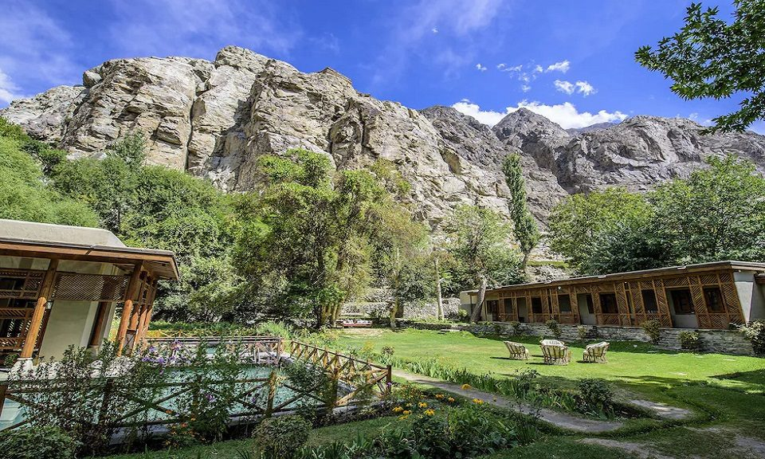

<div class="portfolio-single-load clearfix">
    <div class="custom-full-width-box">
        <div class="custom-container">
            <div class="custom-row align-items-center">
                <div class="custom-image-column">
                    
                </div>
                <div class="custom-text-column">
                    <h2 class="custom-heading">Shigar Valley</h2>
                    <p class="custom-paragraph">
                        Tucked away in the heart of Gilgit-Baltistan, Shigar Valley is a picturesque oasis of tranquility and natural beauty. Home to the historic Shigar Fort and several ancient settlements, the valley offers a glimpse into the region's rich cultural heritage and architectural marvels. With a population of approximately 35,000 people, mostly Balti and Shina ethnic groups, Shigar Valley is a thriving hub of traditional craftsmanship and hospitality. Visitors can explore the valley's lush orchards, gushing rivers, and verdant meadows, immersing themselves in the timeless charm and serenity of this hidden gem in the Karakoram.

                    </p>
                </div>
            </div>
        </div>
    </div><!-- .custom-full-width-box end -->

</div><!-- end single-project -->
